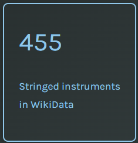
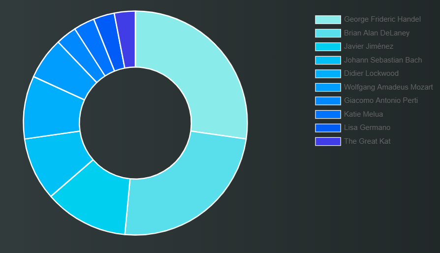

Exploring musical instruments: the violin
The following article provides a general insight of a very renowned musical instrument that has marked an important turning point in the history of music : the violin. In particular, we will observe and analyse the main features and the history of this beautiful instrument, as well as the most influential and talented violinists that, with their remarkable works, achieved lasting fame and played a fundamental role in the history of violin music.
In the first step, we proceeded with an exploration of WikiData in order to discover the amount of stringed instruments that were mentioned inside the knowledge base. A stringed instrument can be defined as any musical instrument having strings as the medium of sound production. Then we narrowed-down our research and we proceeded with the exploration of the number of bowed string instruments: they are a subcategory of string instruments that are played by a bow rubbing the strings. In order to have a more clear visualization of the data that have been retrived, we created a counter query for both categories

At this point, we looked for an instrument that had a lot of information both in the WikiData knowledge base and in the Polifonia corpus, and we ultimately chose the violin.
The violin: an overview

The violin is a bowed string instrument with four strings tuned in perfect fifths. It is the smallest and highest-pitched member of the violin family of string instruments, which also includes the viola, cello and double bass.
A violin is sometimes informally called a fiddle, no matter what kind of music is played on it. The word "violin" comes to us through the Romance languages from the Middle Latin word vitula, meaning "stringed instrument" this word may also be the source of the Germanic "fiddle". A person who plays the violin is called a violinist or fiddler, and a person who makes or repairs them is called a luthier, or simply a violin maker.
Violins have been traditionally used as an accompaniment to singing and dancing. It is also an important classical solo instrument, as well as taking pride of place at the front of orchestras. The violin is both an object of great beauty and symmetry as well as an ingenious work of mechanical design. In the following table, we will look more closely at the main parts that make up this instrument.
| components | image |
|---|---|
| chinrest | |
| sound board |  |
| bridge |  |
| tailpiece |  |
| neck | |
| f-hole |  |
| pegbox | |
| fine tuner |  |
| scroll |  |
The violin has represented orchestral music in the general public for a very long time. However, many people aren’t music enthusiasts who don’t know that violins exist in many different types. This instrument has changed its lifespan for various reasons, leading to the production of different types.
In the following table you can find some of its most famous variants, from the first standard violins that already existed in the sixteenth century, such as the baroque violin (which is considered to be the forefather of the modern violin), to more modern variants like the neolin, an electro-acoustic violin which incorporates a fretted fingerboard, cutaway body, and tremolo mechanism based on the electric guitar.
| ViolinType | image |
|---|---|
| husla |  |
| Serbian violin |  |
| prepared violin | |
| promenade violon | |
| Baroque violin |  |
| Neolin |  |
| violin with sympathetic strings | |
| walking stick violin |  |
| baritone violin | |
| mute violin |  |
Famous violinists
As previously said, the current popularity of the violin is also due to all the incredible musicians that, thanks to their virtuosity and outstanding works, managed to play a crucial role in violin history, leaving an heritage to future generations. At first, we looked for the number of male and female violinists inside WikiData.


Then we narrowed down our research, focusing on the influence that these artists still have in musical history and practice. As a consequence, we searched for the ten most influential violinists.
We also made a comparison between the number of musical compositions that several famous violinists composed during the course of their lives.

The map below is useful to have an idea of the number and distribution of violinists around the world.

Moreover, we added a text search that allows you to look for famous violinists born in a specific country or city.